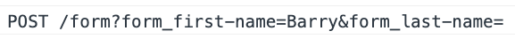

about
ctmx is a backend compliment to htmx.
It provides a unified, react like format for rendering components on the backend that feels like frontend code but without the restrictions and load times of javascript.
The following examples do however use javascript. This enables you to experiment with 'backend code' without having to execute anything untrusted on the server. In a real deployment the code runs on the true backend and only the small (10kb gzipped) htmx library is needed.
introduction
;; this is normally on the backend
(use 'ctmx.core)
(defcomponent ^:endpoint hello [req my-name]
[:div#hello "Hello " my-name])
(make-routes
"/demo"
(fn [req]
[:div {:style "padding: 10px"}
[:label {:style "margin-right: 10px"}
"What is your name?"]
[:input {:type "text"
:name "my-name"
:hx-patch "hello"
:hx-target "#hello"}]
(hello req "")]))
The core of ctmx is the defcomponent macro which expands to both an endpoint and an ordinary function. Try inspecting the above text input. You should see something like the following.

Now try editing the text. On the input's default action (blur) it will issue a request to the "hello" endpoint and update its contents.
This live demo is javascript hosted so the browser logs instead of issuing an actual request. In a regular deployment the code runs on the server and you can observe requests under the 'Network' tab.
handling data flow
(defcomponent ^:endpoint form [req ^:path first-name ^:path last-name]
[:form {:id id :hx-post "form"}
[:input {:type "text" :name (path "first-name") :value first-name}] [:br]
[:input {:type "text" :name (path "last-name") :value last-name}] [:br]
(when (= ["Barry" "Crump"] [first-name last-name])
[:div "A good keen man!"])
[:input {:type "submit"}]])
(make-routes
"/data-flow"
(fn [req]
(form req "Barry" "")))
In the first example we hard coded the target id to hello. Because a component can exist multiple times on the page we can set input names using path. Try submitting the form and inspecting the browser console.

The path function macroexpands to a unique string based on the call stack of nested components. This prevents name clashes if the form component exists multiple times on a page.
Any component with ^:endpoint set must also have :id set to id.
In general the DOM can be updated at any point in the component tree and ctmx uses component id to set path consistently.
nesting components
(defcomponent table-row [req i person]
[:tr
[:td (:first-name person)] [:td (:last-name person)]])
(defcomponent table [req]
[:table
(ctmx.rt/map-indexed
table-row
req
[{:first-name "Matthew" :last-name "Molloy"}
{:first-name "Chad" :last-name "Thomson"}])])
(make-routes
"/nesting-components"
(fn [req]
(table req)))
In order for path to work correctly we must use ctmx.rt/map-indexed instead of clojure.core/map-indexed
This is because path includes array indices in the component tree.
parameter casting
(defcomponent ^:endpoint click-div [req ^:int num-clicks]
[:form {:id id :hx-get "click-div" :hx-trigger "click"}
[:input {:type "hidden" :name "num-clicks" :value (inc num-clicks)}]
"You have clicked me " num-clicks " times!"])
(make-routes
"/parameter-casting"
(fn [req]
(click-div req 0)))
Because htmx submits parameters as strings we can cast them as in the above example.
Supported casts include ^:int, ^:boolean and ^:float.
See documentation for details.
We may also cast within the body of defcomponent.
[:div
(if ^:boolean (value "grumpy")
"Cheer up!"
"How are you?")]
transforming parameters to JSON
(defn add-customer [{:keys [first-name last-name customer-list]}]
{:customer-list
(update customer-list
:customer
#(conj (or % []) {:first-name first-name :last-name last-name}))})
(defn- text [name value]
[:input {:type "text"
:name name
:value value
:required true
:style "margin-right: 5px"}])
(defn pprint [s]
(with-out-str
(cljs.pprint/pprint s)))
(defcomponent customer [req i {:keys [first-name last-name]}]
[:div
[:input {:type "hidden" :name (path "first-name") :value first-name}]
[:input {:type "hidden" :name (path "last-name") :value last-name}]])
(defcomponent ^:endpoint ^{:params add-customer} customer-list
[req first-name last-name ^:json customer]
[:form {:id id :hx-post "customer-list"}
;; display the nested params
[:pre (-> req :params ctmx.form/json-params pprint)]
[:br]
(ctmx.rt/map-indexed cljs.user/customer req customer)
(text "first-name" first-name)
(text "last-name" last-name)
[:input {:type "submit" :value "Add Customer"}]])
(make-routes
"/transforming"
(fn [req]
(customer-list req "Joe" "Stewart" [])))
The path naming scheme we saw earlier provides a convenient way to transform flat html forms into nested structures. The nesting follows the call stack of components. Try submitting the above form.
ctmx.form/json-params does the transform.
The above example also includes ^{:params add-customer} preprocessing. add-customer is applied to the nested
params before the main function is called.
Further Reading
Please see examples.